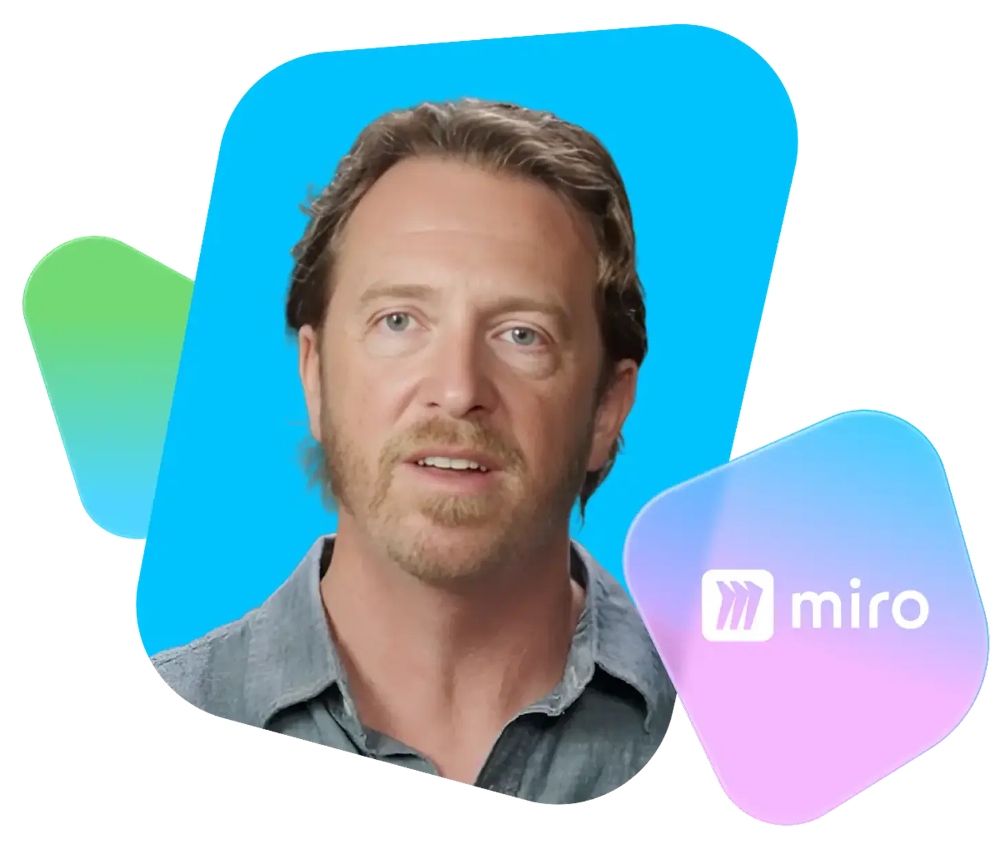

История нашего клиента
"Это дало нашим сценаристам возможность проявлять такой же уровень креативности в визуальном сторителлинге, какой есть у меня."
Стив Соуари Дизайнер обучающих медиа в Miro
10x
Рост скорости производства видео5x
Рост объёма создаваемого видео
